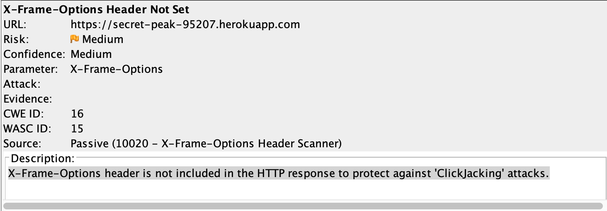
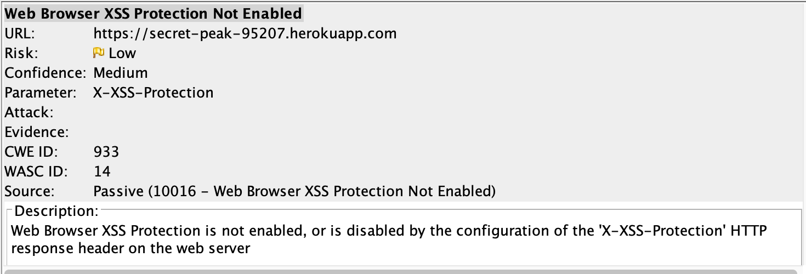

Detailed Issues Found
1: NoSQL injection issue
When query command to the database is not sanitized, it can often erroneously trick the database into executing commands that reveals userdata or have other security vulnerabilities that the developer didn't expect. In this case, the passenger.json route is suppose to only return information about the user corresponding to the inputed username by the client. However, the [$ne] command in the MongoDB API allows the user to find documents whose username is not equal to the inputed username. So when I combined this command with a username that I know the user has not inputed before, I successfully tricked the database to return all entries stored about all of the website's users. This is the command that I used: https://secret-peak-95207.herokuapp.com/passenger.json?username[$ne]=JANE
This is an issue with high severity in most times but medium severity in this case. If this happens with a database that stores sensitive user data such as passwords or bank account information, the exposure of it can have dangerous consequences. In this case, the user's ride information would be exposed and can be explored to track user location. The developer can improve on this using sanitization options such as mongo sanitize. An example would be: username: sanitize(request.body.username)
2: Clickjacking Vulnerability
Clickjacking is when an attacker uses multiple layers to trick the user to click on a button or a link on another page when they were actually intending to click on the top level page. Thus the attacker is hijackign the user's click and re routing it to another page possibly containing dangerous viruses that can cause damage the the user. This is usually of high severity because the attacker can gain sensitive information about the user, and gain control to softwares, cameras, and microphones on the computer to ceber track the user in the long term.
I found this issue through running the OWASP Zad Attack Proxy on the url. The developer did not take preventive measures against Clickjacking attacks. Thus the attacker can easily trick the user into downloading malware or revealing valuable information through Clickjacking. One way to defend against this vulnerability is to set X-Frame-Options HTTP headers for all pages returned by your web application. Setting it to deny will not allow your website to be framed by other domain, thus protecting against Clickjacking.
3: Cross Site Scripting Vulnerability
Cross site scripting vulnarability is one of the top security risks in modern web applications according OWASP top 10 list. It allows the attacker to inject client-side scripts into web pages. This is of high severity because it can allow the attacker to bypass access controls such as the same origin policy designed to protect the user from attackes from different domains. Thus it opens the door to many other kinds of cyber attacks such as Clickjacking.
I found that the developer did not enable web browser XSS protection through running the OWASP zed attack proxy on the url. Chrome automatically enabled this feature. However, Safari and Internet Explorer do not and are thus exposed to cross site scripting attacks. I recommend the developer to set this header to the following value, which will enable the XSS protection and instruct the browser to block the response in the event that a malicious script has been inserted from user input, instead of sanitizing: x-xss-protection: 1; mode=block